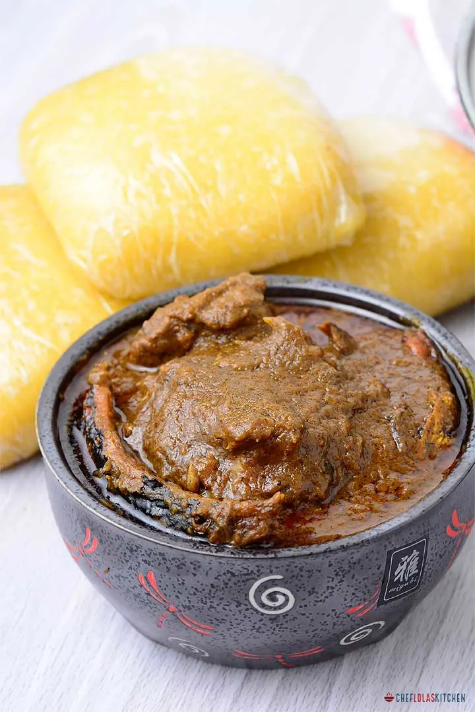

Banga Soup

Banga soup is one of the best nourishing soups you can make with palm
nuts. All it takes is an assortment of spice flavorings, an assortment of
meat and fish, and finishing it off with a touch of ”beletete” to elevate
this soup. It’s an easy recipe that delivers terrific results!
Nigerian Egusi Soup is a soup thickened with ground melon seeds and
contains leafy and other vegetables. It is one of the most popular soups
prepared by most tribes in Nigeria with considerable variation and often
eaten with dishes like Pounded Yams. Prepare it with goat, beef, fish, or
shellfish!
- Beef
- Onion
- Cameroon Pepper
- Seafood
- Habanero or scotch bonnet
- Palm-nut fruit concentrate
- Banga Spice
- Banga Spice leaves
- Dried fish
- Water stock
- salt